• Import extension. Choose folder "Extensions" and open the context menu. Choose "Import Extension" in the context menu or "Import Extension From Library".
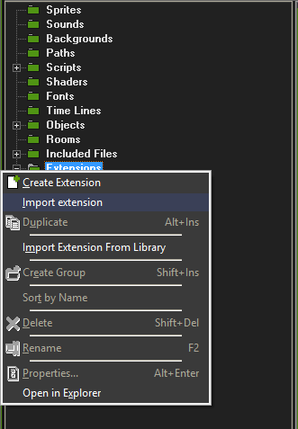
• Then choose "Extensions/spriterGM", call the context menu and choose "Properties".
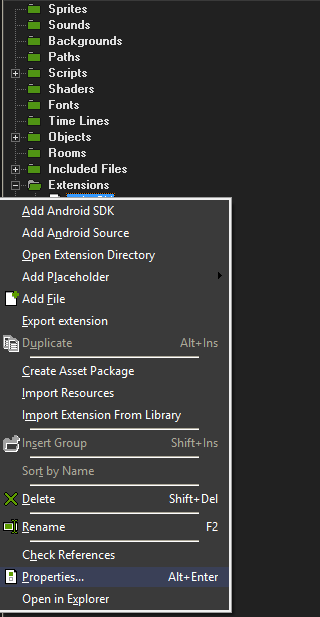
• Select in "Edit Extension Package Properties" the tab "Import Resources", select "Scripts" in the right and click "← " then click OK.
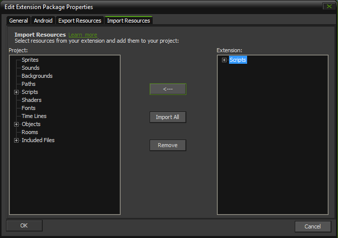
• In order to use the "Spriter 2D" project, simply drag and drop a folder to the "GameMaker" project. The folder should appear in the project in "Included Files".
• In the project tree, select the folder "Objects", call the context menu and choose "Create Object".
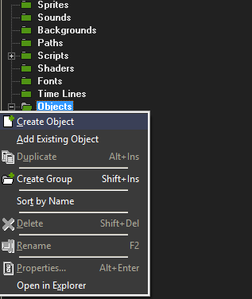
• Then choose "Objects/name of object", call the context menu and choose "Properties".
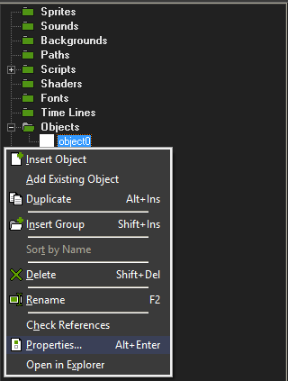
• Now you need to create 3 events: "Create", "Step", "Draw". Each event must have the script code. For this you need to drag and drop "Execute Code" from tab "Control" from the group "Code" to the "Actions:" list for each events.
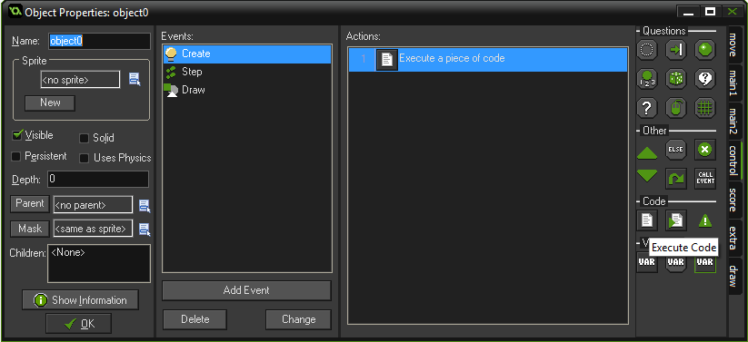
• In order to load the model and create instance you need to select the event "Create" and choose "Execute a piece of code". In the script editor you need to write following: spriter_load(File, Instance Name, Debug Bones);
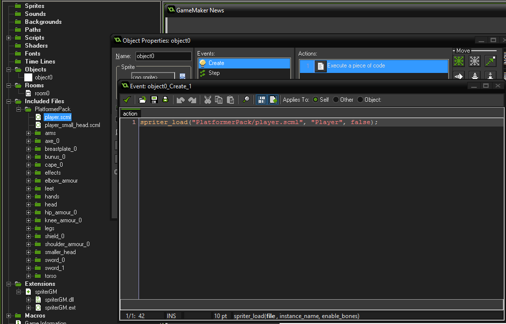
File name you can choose from "Include Files/folder with project Spriter 2D/project file". In this case "PlatformerPack/player.scml". Instance name you can see in the "Spriter 2D". In this case"Player".
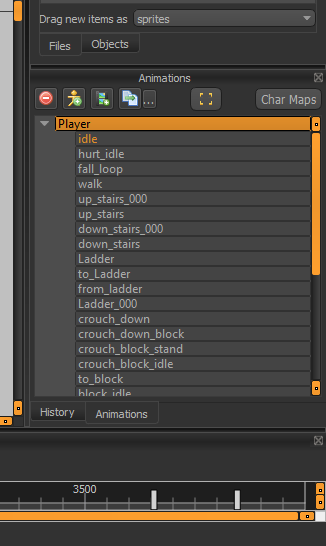
• Select event "Step" and choose "Execute a piece of code". In the script editor, you need to write the following: spriter_update(self); It is necessary to update our animation.
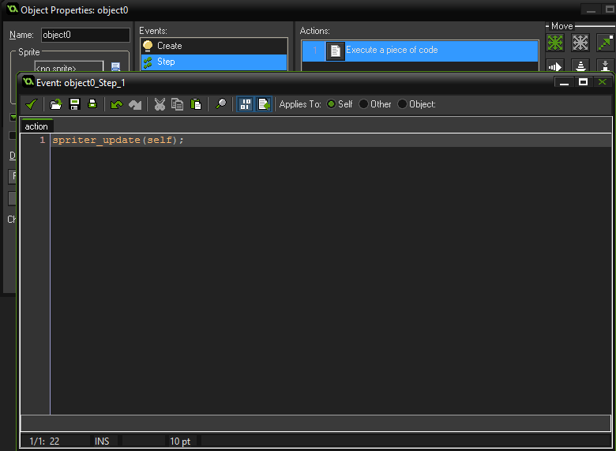
• Select event "Draw" and choose "Execute a piece of code". In the script editor, you need to write the following: spriter_render(self, false);
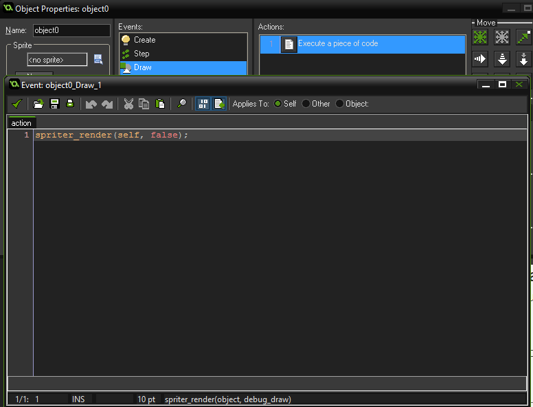
• If you want to change the animation you need to call in script following: spriter_set_current_animation(object, animation name, blend time); for example: spriter_set_current_animation(self, "walk", 0.1);
• If you want to change the skin you need to call in script following: spriter_apply_character_map(object, charmap name); for example: spriter_apply_character_map(self, "axe");
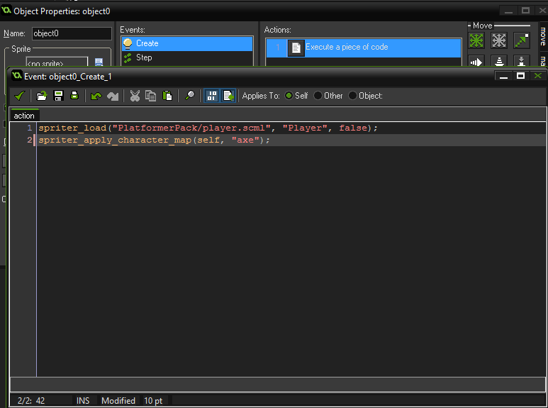
• If you want to delete skin you need to call in script following: spriter_remove_character_map(object, charmap name); for example: spriter_remove_character_map(self, "axe");
• If you want to move, rotate, scale you need to use standard object properties: x, y, image_angle, image_xscale, image_yscale
• If you want to delete object you need to call in script following: spriter_destroy_instance(object); for example: spriter_destroy_instance(player);